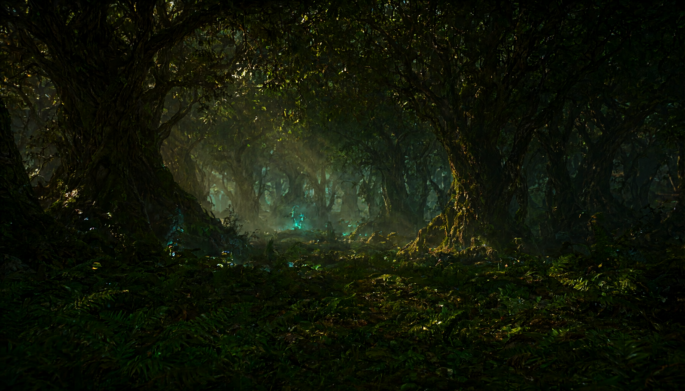
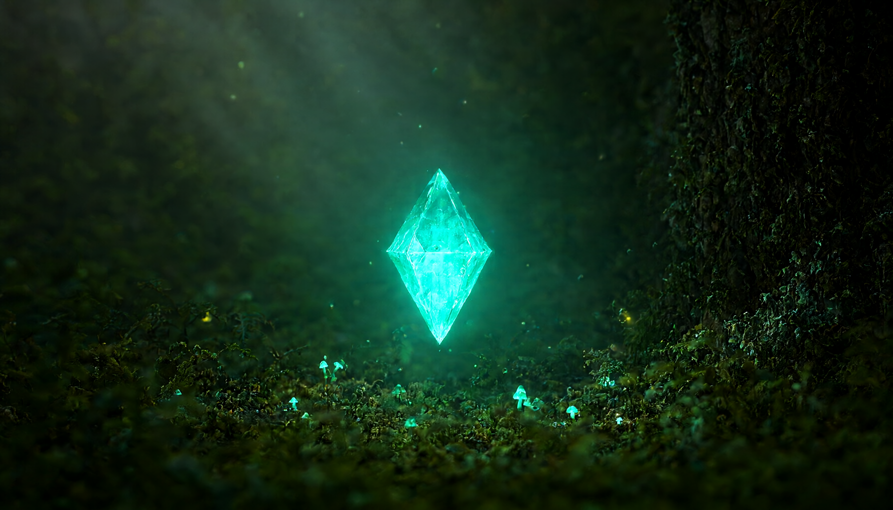
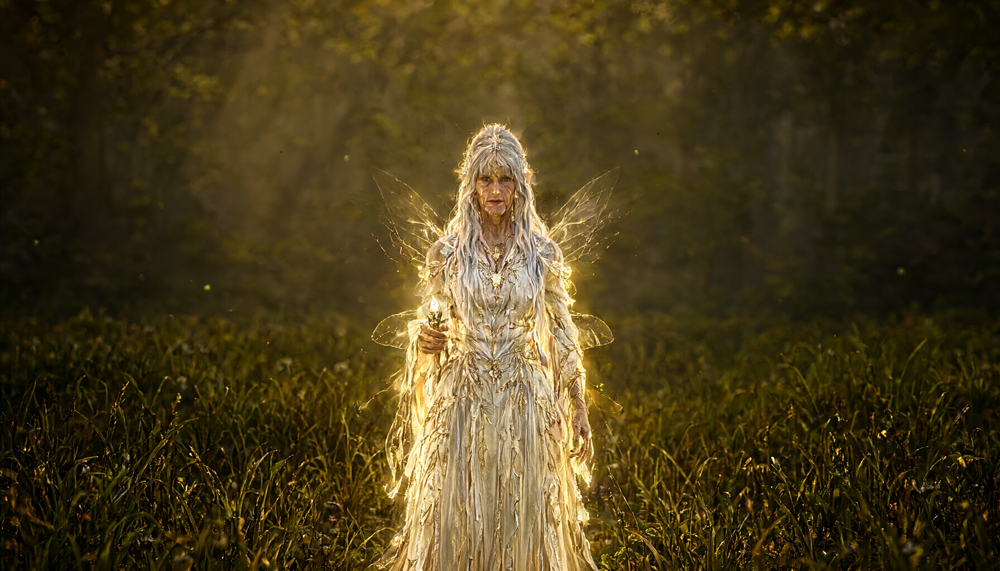
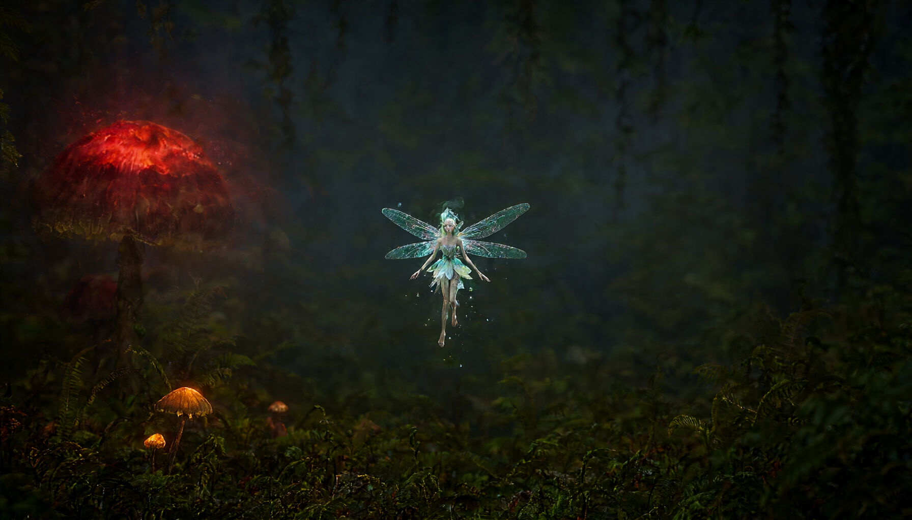
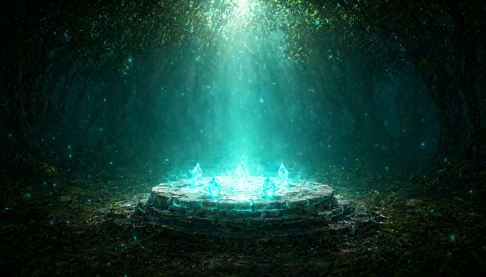

Five AI-generated concept renders approximating what the Unity 6 + HDRP prototype will look like once you light the scene, place the meshes, and bake the volumetric fog. These are not final game captures.

The first thing the player sees. First-person view at the edge of an ancient forest, light shafts piercing the canopy. The faint cyan glow in the distance hints at the Lumenshards scattered ahead. This is the spawn point — the Fairy Elder stands just off-frame to the right.

The collectible. A translucent cyan octahedral crystal floating above the moss, emitting volumetric light. The player approaches, presses E, and the shard is added to the inventory. Glowing mushrooms in the foreground ground the scale.

The quest giver. Silver-haired, gold-aura, translucent wings. She speaks the opening dialogue, offers The Fading Light, and sends the player to recover the shards. Her portrait in the dialogue panel uses this same gold palette.

One of five fairy Keepers, each guarding a shard area. Small, cyan-winged, mid-flight. Players who speak to a Keeper receive a hint about the shard nearby — and a memory of the Vale before the fading.

The culmination. All five shards placed on the stone altar, combining into a single white-cyan aura that fills the glade. The Vale's light returns. This is what the player sees when they complete the quest.